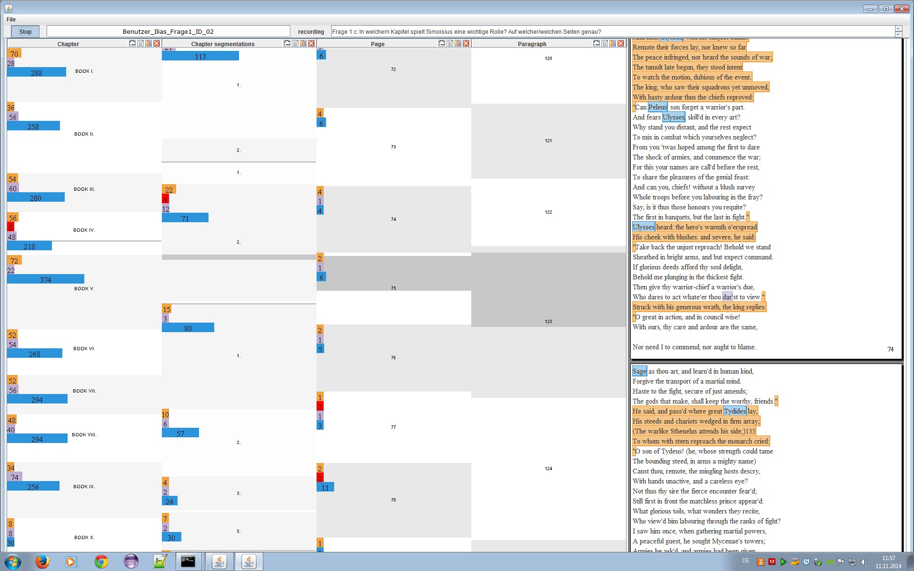

Analysis of Eye Movement Data
We conducted a study to evaluate how participants use the visual analytics system VarifocalReader to find benefits and weaknesses for further development. The objective of our study was to get insights about how participants navigate with the hierarchical visualization. We investigated how participants use visual abstractions as well as how helpful they are at the various layers and for different analysis tasks.

We conducted the study with 16 participants (twelve female, four male). The average age of participants was 23.5 years (min = 21, max = 33). Eleven of the participants were students from the humanities and five studied computational linguistics. We only analyze the eye movement data of 8 participants due to technical problems and the study design. The task participants had was to use VarifocalReader to explore the book by Emil Staiger "Grundbegriffe der Poetik" ("Basic Terms of Poetics") and answer the questions if Schiller's work "Wallenstein" is a typical example of dramatic poetry and which other works are referenced in this context?
We mainly focus our analysis on the attention maps of participants eye movement data. For participants P01 and P10 we find that they have focused on each part of the stimulus during the study. In contrast, P14 or P07 did not focus on the middle part, which is most likely the area where the paragraph layer is, indicating that they did not need this part to answer the question.
The most attention for participants P09, P13, and P15 are on the right, which is the area were the actual text document is shown in the VarifocalReader.
Inspecting P05 we find that there is no area that got a lot of attention and there is just a small part in the bottom middle that was not focused on at all.